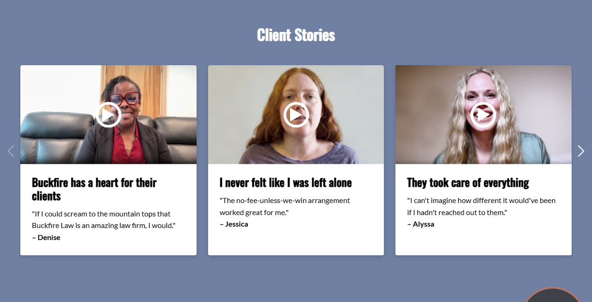
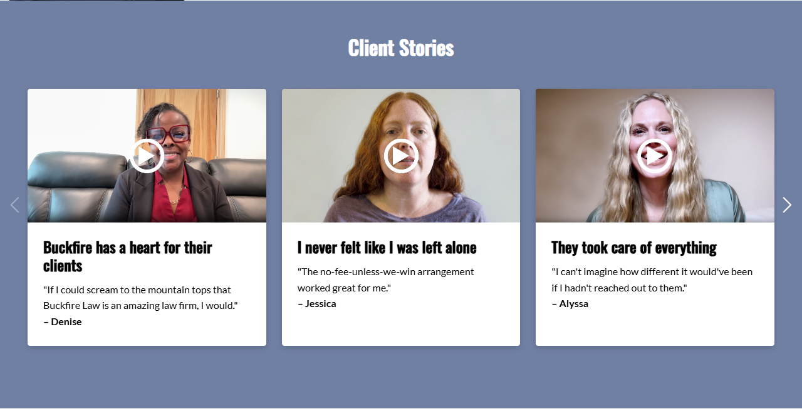
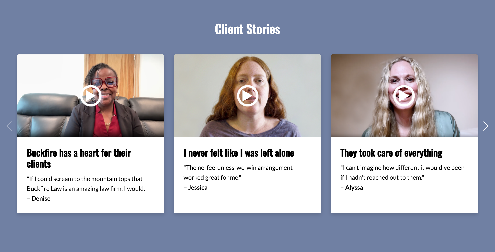
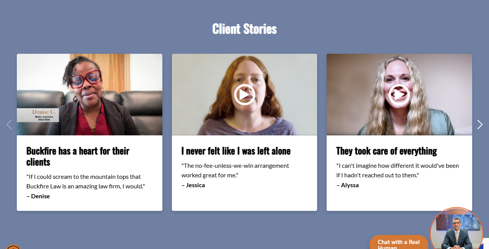
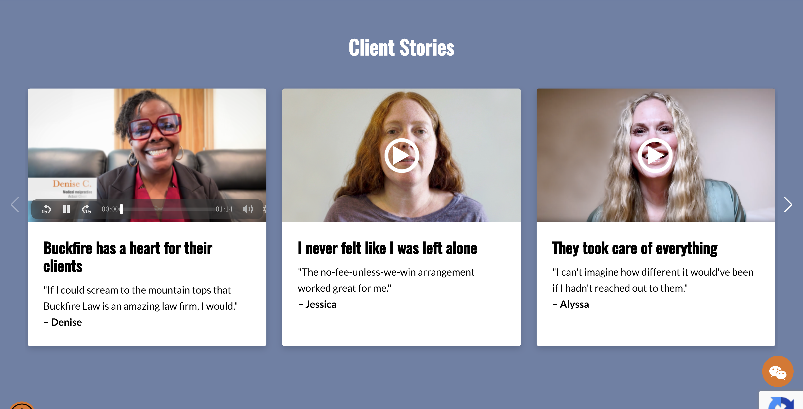

BuckfireLaw_12 — “Client Stories” video carousel
100052508 · /medical-malpractice-lawyers/ · Convert.com ·
tested 4 August 2026 · 6 browser projects, desktop + mobile
Summary
34 tests × 6 browsers. The carousel and the video functionality work correctly on every browser, desktop and mobile — all 6 clips decode and play, both click paths start the right clip, the three responsive breakpoints are correct, and the control is clean.
The 30 failures are 5 checks reproducing identically on all 6 browsers (5 × 6 = 30) — not 30 distinct problems, and none browser-specific. Three of the five are intentional placeholder content (see below); the remaining two are accessibility gaps.
Scope & environment
| Item | Value |
|---|---|
| Variation URL | ?cro_mode=qa&_conv_eforce=100052508.1000256555 |
| Control URL | ?cro_mode=qa&_conv_eforce=100052508.1000256554 |
| Source under test | local_testing/Local2/variation/v2.js (246 lines) · v2.css (119 lines) |
| Spec | my-playwright-project/testing/buckfire-12-client-stories.spec.js |
| Body class | BuckfireLaw_12 · component prefix buckfire-12- |
| Injection anchor | #case-results → section added as next sibling |
| Carousel library | Swiper 6.8.4 from cdnjs (see BUG-06) |
| Breakpoints | 1 slide <721px · 2 slides 721–1099px · 3 slides ≥1100px · loop:false |
| Viewports | Desktop 1280×900 · tablet 800×900 · mobile 390×844 + Pixel 5 and iPhone 12 device profiles |
| CDN assets | 5 .mp4 + 6 .png on v2.crocdn.com — all return 206 on ranged GET, none 404 |
Results by browser
| Project | Passed | Failed | Video playback | Failure identity |
|---|---|---|---|---|
| Chrome Desktop | 29 | 5 | ✓ decodes & plays | TC-30/31/32/33/34 |
| Firefox Desktop | 29 | 5 | ✓ decodes & plays | TC-30/31/32/33/34 |
| Edge Desktop | 29 | 5 | ✓ decodes & plays | TC-30/31/32/33/34 |
| Safari Desktop (WebKit) | 29 | 5 | ✓ decodes & plays | TC-30/31/32/33/34 |
| Mobile Chrome (Pixel 5) | 29 | 5 | ✓ decodes & plays | TC-30/31/32/33/34 |
| Mobile Safari (iPhone 12) | 29 | 5 | ✓ decodes & plays | TC-30/31/32/33/34 |
Verified working
| Area | Confirmed on all 6 browsers |
|---|---|
| Injection | Body class applied; exactly one section; inserted as #case-results next sibling; dedup guard holds |
| Structure | 6 slides, each with video + poster + play button; all 6 posters load (naturalWidth > 0) |
| Lazy loading | No src before click; preload="none"; playsinline on all 6 |
| Carousel | Swiper instance attaches; 3 / 2 / 1 slides per view at 1280 / 800 / 390; next and prev both advance; loop:false correctly disables prev at start and next at end; arrows visible and within section bounds |
| Layout | Card art box holds its 415∶233 ratio at every viewport; cards equal-height via flex |
| Video playback | All 6 clips decode and play — readyState ≥ 2, currentTime advances, non-zero duration/videoWidth, no MediaError on any clip |
| Click paths | Poster click and play-button click both start that card’s own clip |
| Pause-others | Starting a second video by click pauses the first |
| Resume | Re-clicking a paused video resumes from position, no rewind to 0 |
| Control | No body class, no section, no slides; #case-results anchor present |
| Errors | No page errors attributable to the variation |
Bugs
The mouse path is correct and is not in question. pauseOtherVideos()
runs on click, and the live('.buckfire-12-video','click') handler also catches clicks on
the native controls, so a mouse user always ends up with a single video playing. Confirmed
on all 6 browsers, and reviewed and accepted by the client.
The gap is the non-click resume path. The source comment says native-control resume
is “caught via the play event” — but no play listener is ever
registered. Repro: play card 1 → play card 2 (card 1 correctly pauses) → focus card 1’s
video and press Space → both play, audio overlapping:
after click path : [false, true, false, false, false, false] // correct - mouse
after SPACE on #1: [true, true, false, false, false, false] // keyboard gap
after .play() x2 : [true, true, false, false, false, false] // programmatic gapIn practice this reaches keyboard users only, so it belongs with BUG-03 and should be fixed in the same pass. One line:
document.addEventListener('play', function (e) {
if (e.target.matches('.buckfire-12-video')) {
pauseOtherVideos(e.target.closest('.buckfire-12-video-thumb'));
}
}, true); // capture: 'play' does not bubbleNot measured: a mouse click directly on the native play control — inferred covered from the click handler rather than tested. Worth one confirming pass if certainty is wanted.
Slides 4, 5 and 6 carry slide 3’s exact title “They took care of everything” and its exact
quote, so 4 of 6 cards show identical copy, and slide 4 reuses Test12_video3.mp4 — the
same clip as slide 2 — so 6 cards play 5 distinct videos.
Client-confirmed intentional (4 Aug 2026): this build is for internal review and
the twice-used video is a known dummy; real copy and clips arrive within days. Matches the in-code
note at v2.js:64. TC-32 / TC-33 / TC-34 therefore fail by design — kept in the suite so
the content swap-in is verified rather than assumed.
titles: ["Buckfire has a heart for their clients",
"I never felt like I was left alone",
"They took care of everything",
"They took care of everything", <-- placeholder
"They took care of everything", <-- placeholder
"They took care of everything"] <-- placeholderThe play control is a bare <div class="buckfire-12-play-button">:
tabIndex −1, no role, no aria-label. Keyboard and
screen-reader users cannot reach or operate it — and since controls is only switched on
after the first click, there is no keyboard path to playback at all.
Fix: render a real <button type="button" aria-label="Play Denise’s
story">, or add tabindex="0" + role="button" + an accessible name
and an Enter/Space keydown handler.
All three read alt="Alyssa video thumbnail" while showing Denita, mike and shaylynn.
Slides 1–3 are correct.
These are the placeholder slides, so the copy is being replaced anyway. Worth flagging because
thumbAlt is a separate field from the visible name and was missed when
the placeholder rows were duplicated — the same slip carries into real content easily. Make alt text
an explicit item on the content swap-in checklist rather than assuming new copy fixes it.
"– mike" and "– shaylynn", against properly-cased "– Denise",
"– Jessica", "– Alyssa", "– Denita". Both sit on placeholder
slides — noted only so the real names land properly cased.
The script loads Swiper 6.8.4, but the markup uses the Swiper 7+
convention class="swiper buckfire-12-swiper" — Swiper 6 expects
swiper-container. Swiper 6’s container CSS therefore never matches, which is exactly why
v2.css:108-110 has to re-declare overflow:hidden by hand.
It works today only because of that patch and because .swiper-wrapper/
.swiper-slide rules are class-name-stable across versions. Any CDN bump or added
container-level styling will break it. Fix: load Swiper 7+, or rename the container
to swiper-container to match the v6 bundle actually in use.
--swiper-navigation-size: 22px is declared on .buckfire-12-swiper, but the
arrows are siblings of that element, not children, so they never inherit it.
Measured on the arrow: 44px (Swiper’s built-in default). The 25px you actually see comes
from the separate hardcoded rule at v2.css:116-120, so the intended 22px never renders.
The three --swiper-pagination-* variables are dead too — pagination is commented out at
v2.js:166-170.
VIDEO_URL is only reachable if a card omits video-url; all six supply one.
.buckfire-12-play-button declares no background and no
border, so the white ring and triangle sit directly on the poster. On the lighter
thumbnails (Jessica, Alyssa) contrast is weak — visible in the desktop screenshots below. A
semi-transparent dark backing would fix it. Flagged rather than filed as a bug because
no Figma was supplied for this test, so the intended treatment is unconfirmed.
All test cases
| # | Group | What it checks | Result |
|---|---|---|---|
| TC-01/02/03 | Control | No variation class, no section, no slides; anchor present | Pass ×6 |
| TC-04 | Structure | BuckfireLaw_12 on body | Pass ×6 |
| TC-05 | Structure | Exactly one section (no duplicate injection) | Pass ×6 |
| TC-06 | Structure | Inserted immediately after #case-results | Pass ×6 |
| TC-07 | Structure | Heading reads “Client Stories” | Pass ×6 |
| TC-08 | Structure | Renders 6 slides | Pass ×6 |
| TC-09 | Structure | Every slide has video + poster + play button | Pass ×6 |
| TC-10 | Structure | All 6 posters load (naturalWidth > 0) | Pass ×6 |
| TC-11 | Structure | Own video-url, no eager src, playsinline, preload=none | Pass ×6 |
| TC-12 | Structure | Titles and names match the v2.js slide data | Pass ×6 |
| TC-13 | Carousel | Swiper instance attaches; overflow clipped; wrapper is flex | Pass ×6 |
| TC-14 | Carousel | 1280 → 3 slides per view | Pass ×6 |
| TC-15 | Carousel | 800 → 2 slides per view | Pass ×6 |
| TC-16 | Carousel | 390 → 1 slide per view | Pass ×6 |
| TC-17 | Carousel | Next button advances | Pass ×6 |
| TC-18 | Carousel | Prev button goes back | Pass ×6 |
| TC-19 | Carousel | loop:false — prev disabled at start, next at end | Pass ×6 |
| TC-20 | Carousel | Arrows visible and inside section bounds | Pass ×6 |
| TC-21 | Carousel | Art box holds 415∶233 | Pass ×6 |
| TC-22 | Video | Play click loads that card’s src, enables controls | Pass ×6 |
| TC-23 | Video | Poster and play button hide on click | Pass ×6 |
| TC-24 | Video | Poster click (not just button) also starts video | Pass ×6 |
| TC-25 | Video | Actually decodes and plays — currentTime advances | Pass ×6 |
| TC-26 | Video | Metadata loads for all 6 clips; no MediaError | Pass ×6 |
| TC-27 | Video | Second video (by click) pauses the first | Pass ×6 |
| TC-28 | Video | Re-click resumes rather than restarting | Pass ×6 |
| TC-29 | A11y | Every poster has non-empty alt | Pass ×6 |
| TC-30 | A11y | Alt names the person shown | Fail ×6 — BUG-04 |
| TC-31 | A11y | Play control keyboard-reachable and operable | Fail ×6 — BUG-03 |
| TC-32 | Content | Story titles unique | Fail ×6 — by design (placeholder) |
| TC-33 | Content | Each card plays a distinct clip | Fail ×6 — by design (dummy video) |
| TC-34 | Content | Names properly capitalised | Fail ×6 — by design (placeholder) |
| TC-35 | Stability | No page errors from the variation | Pass ×6 |
| — | Screenshots | Desktop / mobile / playing capture per project | Pass ×6 |
Screenshots
18 captures — desktop 1280, mobile 390 and playing state for each of the 6 projects. Full set in
my-playwright-project/buckfire-12-screenshots/.
Desktop 1280 — 3 slides per view



Mobile 390 — 1 slide per view
Playing state — controls on, poster hidden


Harness notes
- Force URLs inject headless. Both preview links apply in headless Playwright with
no fresh-context or extra
cro_modeworkaround — unlike CRE-T-144 on Pet Insurance Gurus. - Wait on
element.swiper, not an “initialized” CSS class. Swiper 6 addsswiper-container-initializedand Swiper 7+ addsswiper-initialized; given BUG-06’s version/markup mismatch neither is a safe signal.waitForFunction(() => el.swiper)is version-agnostic. - Gate real-playback assertions on codec support.
canPlayType('video/mp4; codecs="avc1.42E01E"')guards TC-25–28 so a build without H.264 skips with a reason instead of reporting a false functional failure. All 6 projects decoded H.264 on this Windows machine (0 skips), but keep the gate for CI/Linux where WebKit usually lacks it. - Measure slides-per-view geometrically — count slides fully inside the container
rect. Reading Swiper’s
params.slidesPerViewreturns the pre-breakpoint value. - Ranged GETs return 206 on
v2.crocdn.com— accept[200, 206], not200, when checking asset availability. - Run per project in the foreground (~3.2–6.7 min each). Background runs get killed early in this environment — same lesson as CRE-T-144 and SWF146.
- Filter console assertions. The page emits ~115 unrelated entries per load (font
OTS parsing error, generic pixel errors); assert onpageerrorscoped to the variation instead.
testing/buckfire-12-client-stories.spec.js ·
knowledge base qa-knowledge-base/buckfirelaw/buckfire-12-client-stories.mdScreenshots are referenced by relative path — keep this file inside
local_testing/Local2/ for them to resolve.